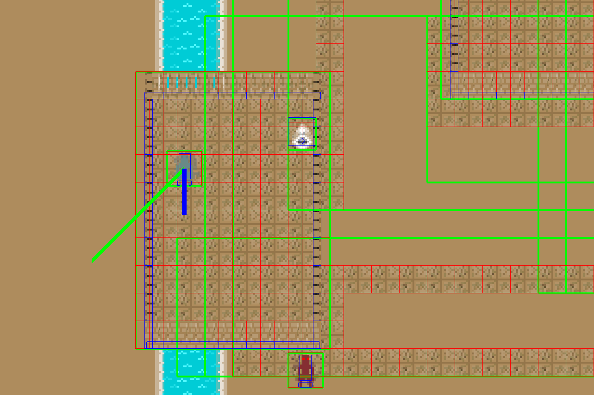
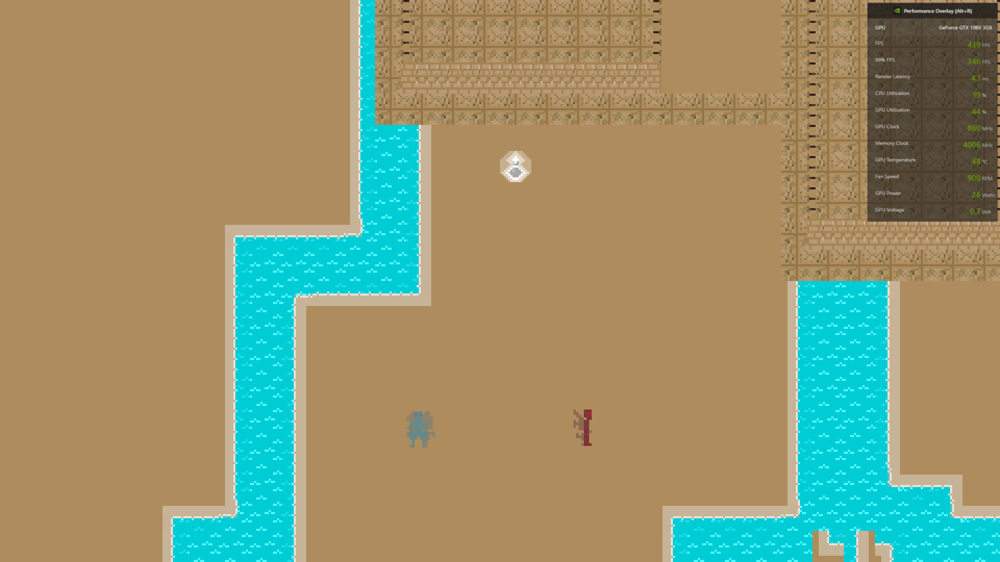
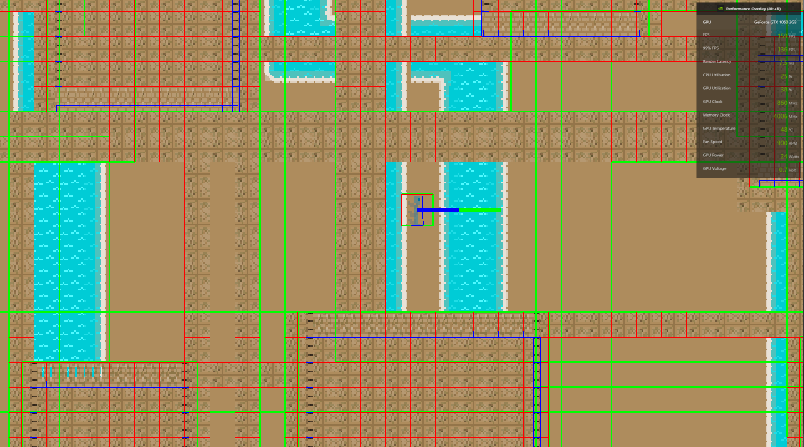

Shuttle engine was a project I started back in December 2020. It was designed to be an isometric engine, which would be extremely lightweight,
and avoid reliance on any outside libraries so I could minimise size, and avoid calling any methods which I didn’t have full control over, and
therefore couldn’t necessarily optimise. At the moment, it uses a tile based background, which sorts at launch to
avoid reducing framerate, and can also have tile based objects. The last feature I was working on was sound and some general optimisation
 Demo game with debug lines
Why I made it
I started it as a project partially in response to my previous work in the year 3 game development module where I made a short game “Fight Knight”,
and found GDevelop extremely limited. At the time, I’d wanted highly specific things, but also didn’t have the time to use a more comprehensive engine
properly, due to the scale of the project, and how much I was making from scratch. I also had more ideas for games I’d liked to have made, but found the
process of working with GDevelop too frustrating to want to progress with what I’d originally planned for Fight Knight or anything else. While I could
have used an existing engine, such as Unity, Unreal or Godot, I wanted the challenge of making something of my own, the control it would give me over
the individual components, and the advantages it would give me by cutting down on generalisation in favour of better performance, and compatibility with
lower spec platforms, such as Mac, particularly older models, PS Vita, 3DS, PS3, and Xbox 360.

Low intensity scene (439fps, 346 99%fps)
How it works
While the engine uses fairly standard methods to achieve physics integration, collision detection, and rendering, there are important changes which
have been made to improve the performance based on knowing how the entire engine is put together. For example, rather than relying on depth testing, the
engine already has access to information on the z layer of each texture, because the layers load in pre-sorted, and only a few objects can move on the z
axis. As such, I was able to eliminate depth testing, and just render the objects back to front with no issues.
Demonstration of working Z layers in Shuttle Engine
Additionally, a lot of the textures are
loaded in sorted into their positions, which means that the renderer has a vastly reduced workload compared to throwing objects at it and letting the GPU
decide what to do, especially on machines which may only have an integrated GPU. While not so much of a performance issue, the engine also gives
me a great deal of control over animations. I learned a lot about animating frames while on a GIF AI project, and I was able to transfer the most useful
elements over, so that animation speed, and image scale are both extremely easy to control. Not to mention, it can be synchronised with hitboxes to allow
for animation with them as well, if only in the sense of stop motion.
Different animation types
Observations
With the most recent implementation of any sort of game on this project, with my Year 4 dissertation , my PC was able to run
the engine at around 1000fps at the best of times, with more entities lowering the framerate gradually. This project was using an emotion based AI, so the results
were very encouraging. After I added some basic optimisations to the engine as well, the performance should have been better, however, I never got around to testing this,
as changing what gets serialised and deserialised broke the previous level for this iteration of the project. I was
able to simulate the conditions of my additions before running them however. The resulting code base would have been much easier to work with, and the framerate shouldn't
have had so many problems when adding in more and more entities.
While the engine hasn’t been used for any commercially viable games, every iteration I made worked, and I was able to keep it fairly modular and well
managed, adding a new feature in at each stage. Only a few changes were needed with older features to get the newer ones to work, for example, the
serialiser didn't allow lists of lists, so I fixed that with a custom class. It also ran well on machines it's been tested on, with friends on lower spec laptops reporting framerates of around
40 for very large maps with objects which span extremely large spaces. Additionally, I did add a few changes that increased performance for large objects, although this hasn't been tested. Also, at a certain level,
these are stress tests. A game at release would be better compartmentalised to make better use of the engine’s capabilities.

High intensity scene (159fps, 136 99%fps)
What would I do differently if I started over?
The first major change would be switching the language to C++. The engine is more than performant enough for how I used it, but the two major benefits
would be increased control over memory management, and direct access to OpenGL, rather than needing to use a wrapper. Having said that, direct compatibility
with my third year dissertation is also handy, so there would be drawbacks to the change. The other major change would be focusing
on usability. While it's optimised, and runs well, the lack of any sort of editor for levels makes it tricky to go back to when I have limited time for personal
projects.
How I've been able to use it
The only major project I've undertaken using Shuttle Engine has been my Year 4 project and dissertation to allow for an implmentation of the AI in a game context.
While this was a success as far as the intended purpose is concerned, the overall game isn't particularly fun, and lacks many of the features you'd associate with video games in general. To remedy this,
I did plan a few projects, each with the intended goal of adding certain features, while able to function mostly with what's already been implemented, although I never got time to do this before I started my job.
The last work in progress was going to be a small multiplayer game, designed to implement menus, projectiles, a more general implementation of collision resolutions for game logic, networking, custom game settings,
a better control system allowing for input remapping, some more optimisations of the engine in general, custom characters, and sound. Each following game should be an exercise in adding new engine features and
optimising where possible, along with learning its strengths and weaknesses for performance, with an additional six concepts written out for possible future use.